開發誌 · 2026-11-17 · 系列（十）人物細緻度
人物細緻度：從主播台走進自家書房
節目的主持人是 AI 生成的原創人物。他的第一版，頻道主看了一句話就點出問題： 「很典型的電視台主持人。」西裝、檯燈、兩台螢幕，好看，但不像一個真的人。
這一篇記錄他怎麼一版一版變得像真人。能走到這一步，有一半要歸功於 （九）租雲端顯示卡：算力不再卡在本機那張卡上， 我們才付得起「每一季做一套人物」這種細工。
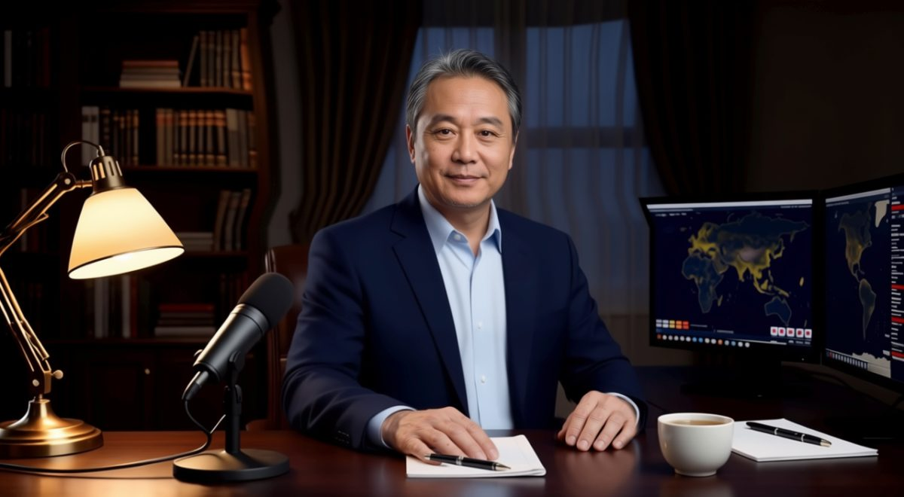

第一課：真人不是「好看」，是「有歲月」
主持人第一次完整進節目之後，頻道主寫了六點意見，第一點就是皮膚太完美，像保養品廣告。 查下來原因很具體：定妝照用的是快速模式（四步算完），本來就帶磨皮感；臉在影片裡只有一百多個像素寬， 影片模型又把細節抹平一次。
從那之後，我們把「真人感」寫成一份做之前就照著做的規格，而不是做完再補救的清單：
- 皮膚：六十歲上下該有的毛孔、皺紋、眼袋、少量淡斑；不美白、不磨皮、不上妝。
- 亮度只准降、不准升：每一版臉頰的亮度都要量，不能比上一版亮。
- 頭髮花白、頂上可以稍稀；手看得到青筋和指節的皺褶。
- 頭身比例：第一版頭偏大，第二版把頭縮了 7%。
- 先量再給人看：皮膚紋理、膚色亮度、白髮比例、跟上一版是不是同一張臉，機器先量過，過了才給頻道主。
還有一條是規矩：頻道主拿來對照膚質與白髮的真人照片，只拿來「看」，絕不餵進模型當臉的參考。
光從窗戶進來
第四版最大的改變是場景：從小攝影棚換成一間有大窗的書房。頻道主的想法是， 靠戶外的採光，人才會有亮面和暗面，肌理更明顯，也可以有斑點——攝影棚的平光把這些都洗掉了。
做的時候踩了一個坑：叫生成模型「整張重新打光」，結果顏色過飽和、整張臉長出麻點。 後來改用自己寫的打光工具：以鼻樑為界，靠窗的半邊臉調亮並加回皮膚紋理，另半邊壓暗； 陰影偏暖、亮面偏冷。臉沒有重畫，五官原封不動，只是把光加上去。
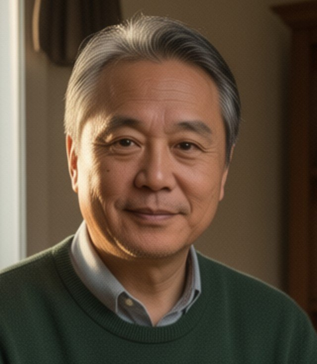
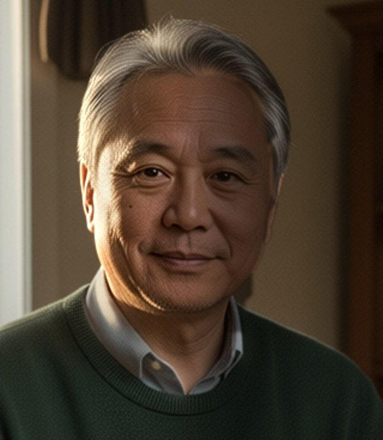
同一間書房的一年
有了窗，就有了季節。我們替同一間書房排了一整年的行事曆：窗外的景色、身上的衣服、桌上和壁爐台的擺設跟著換， 其他都不動。
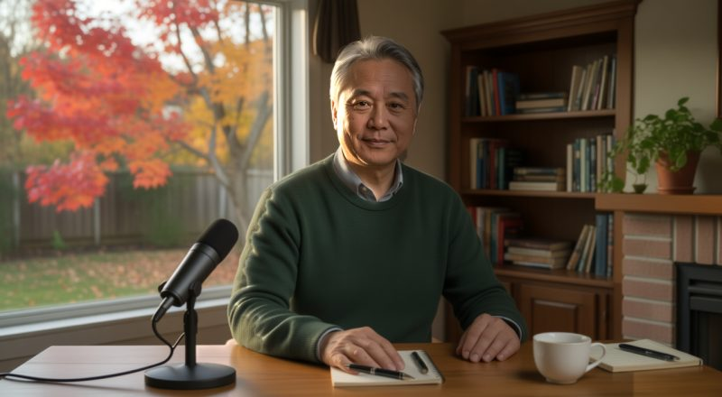
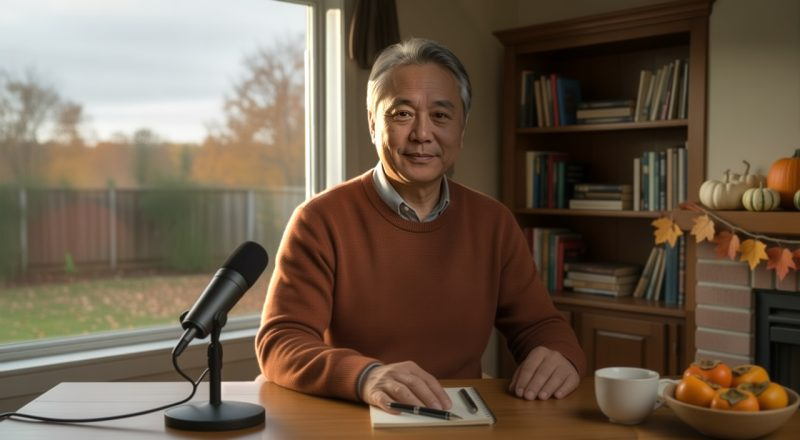
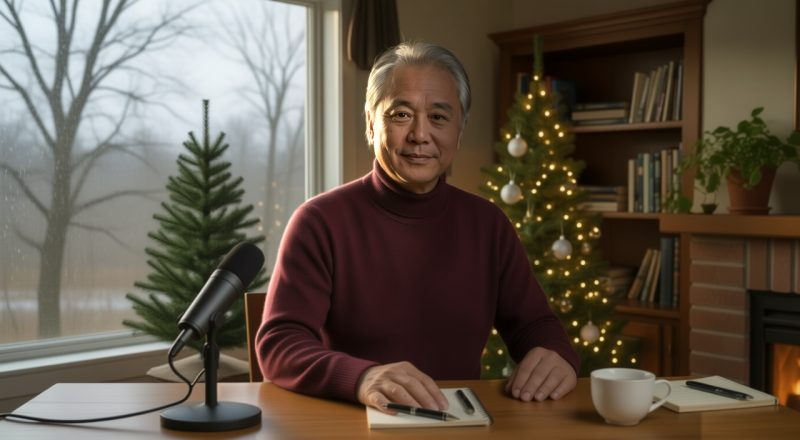
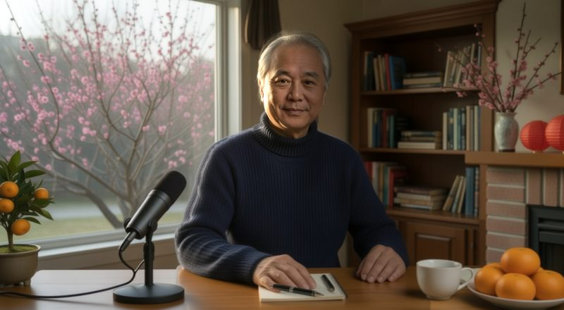
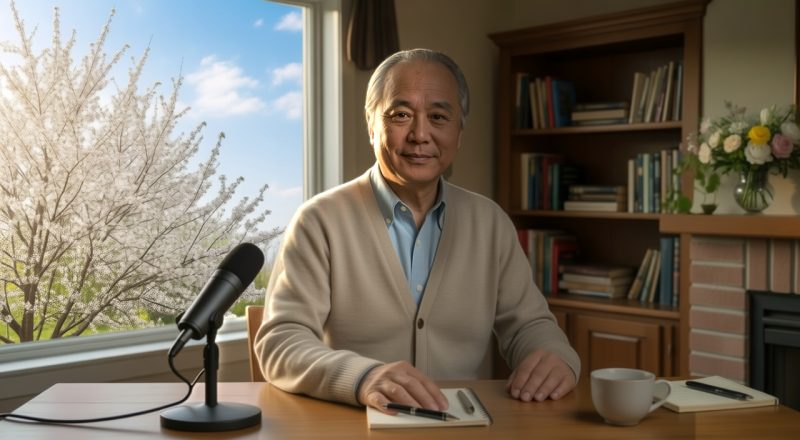
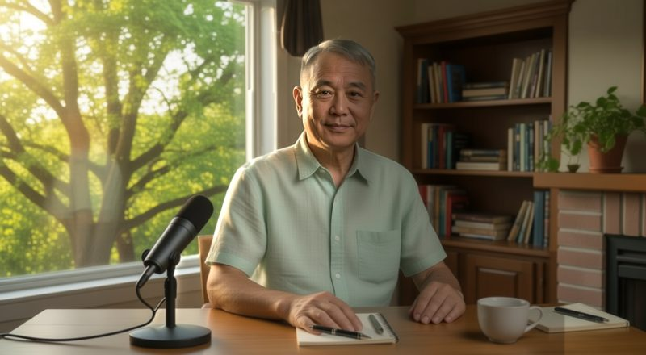
幾個細節：
- 窗外的樹是真的。春、夏兩季的窗景，用的是頻道主自己拍的樹。只寫文字讓模型畫的窗景會過飽和、像油畫； 給它一張真實照片當參考，就自然得多。照片先裁到只剩樹和天空——房子、門牌、車、路人一律不留， 觀眾不會從窗景認出這是哪裡。
- 節日要低調。聖誕樹小而樸素，新年的燈籠是素面的，像真的家，不像樣品屋。
- 畫面裡不放任何字。AI 寫中文會變亂碼；春聯、福字要的話，之後用真的字合成上去。
頭髮會老
一年下來人會變，所以頭髮也排了進度：秋天和感恩節照現在，聖誕起慢慢變少，到春天最少，夏天剪短。 我們做了一把「頭髮階梯」，一級一級往下試，頻道主看完說：到第三格就差不多了，不能再少了。 於是第三格就是上限。
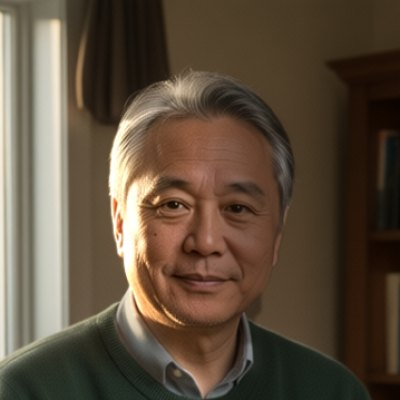
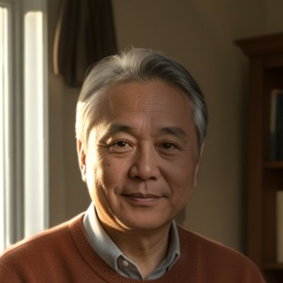
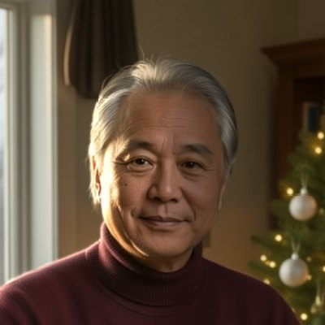
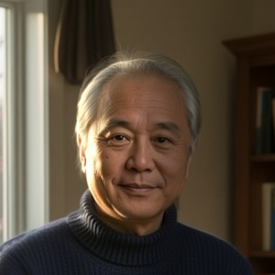
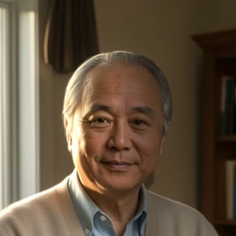
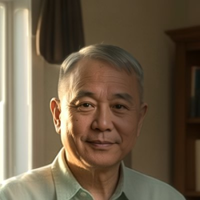
難的是一年都要是同一張臉。每換一季，生成模型都會讓臉漂一點，所以換完衣服、窗景、頭髮之後， 再把定案的那張臉貼回去。這裡學到兩件事：
- 每張圖只變形一次。對齊、貼回這類變形做兩次以上，皮膚紋理就會明顯變糊（我們量到紋理分數從 1.7 掉到 1.1）。
- 量測也會騙人。頭髮變少之後，臉部相似度一度掉到 0.7 左右，看起來像換了人； 查下來是量測把額頭也算進去了。跟「同髮型」的版本比，相似度是 0.97，臉其實沒變。
一張定妝照，衍生出一整套動作
每一季的定妝照定案之後，就從它長出一整套不講話的動作：讀筆記、看窗外的落葉、調麥克風、托著下巴想、 貓跳上桌⋯⋯每一段都從同一張定妝照開始、回到同一張定妝照結束，所以在節目裡哪一段接哪一段都接得起來。 另外再做一張「空房間」，讓主持人可以走進來、走出去。秋季這一套做了 27 段，在雲端的顯示卡上跑完。
指令裡有一條很重要的規矩：房間裡沒有的東西，連提都不能提。舊場景有螢幕，舊指令寫「看著螢幕」； 照抄到新場景，模型就會在書房裡畫出一台螢幕，甚至把壁爐拿掉。新場景一律改寫成「看向畫面右邊、鏡頭外」。
做完的每一段，機器先檢查：臉像不像、頭有沒有變大、頭尾接不接得上定妝照、背景有沒有多出東西。 這一輪抓到的問題：
- 貓太大、跑到桌子前緣貼近鏡頭（重做之後，跳上桌那一段修好了）。
- 往後靠的時候，牆上冒出原本沒有的掛鐘和相框——收起來不用。
- 坐下和起身，每一次都會趴到桌上、臉湊近鏡頭。
最後這一個最頑固：雲端跑了兩輪、換了好幾個種子，指令也加了「站直、不要趴到桌上」，結果都一樣。原因出在構圖—— 鏡頭只拍到胸口以上，坐下或起身時頭要從畫面上緣進出，模型為了讓臉一直留在畫面裡，就讓人往前趴。 指令修不好，我們就不再花雲端的錢重跑，改在本機剪：量每一格的臉有多大，超過定妝照 1.08 倍的那幾格剪掉， 前後用不到半秒的淡化接起來。頻道主看完說：淡化可以。
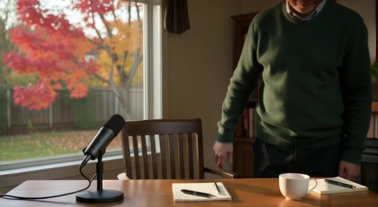
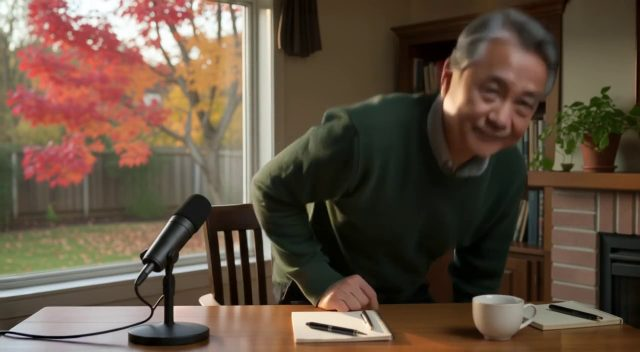
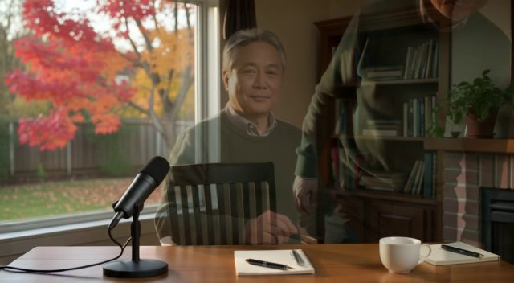
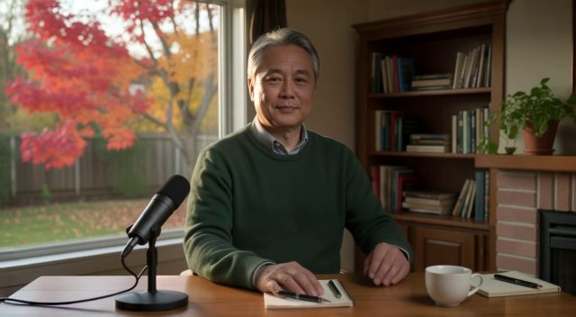
細緻，是因為算得起
回頭看，這一版一版的細工，每一步都要多算很多張圖、很多段影片。在本機那張 12 GB 的卡上， 一段動作要算四分鐘左右，一季的動作庫就是兩個多小時，還要跟每天的配音搶同一張卡； 租雲端的 RTX 5090，秋季這一整套動作庫約 1.4 美元。 算力便宜了，細緻才變成一個划得來的選擇。
下一套是感恩節，接著是聖誕節、農曆新年。每一套都照同一個流程：定妝照、側窗光、同一張臉、機器檢查、頻道主點頭。
主持人怎麼放進節目，見（七）數位主持人； 工具清單見附錄：工具清單。
本頻道由 AI 協助製作與記錄，選題、判斷與觀點出自頻道主本人。本文圖片中的主持人為 AI 生成之原創人物， 節目中出現時一律標示「AI 生成主持人」。